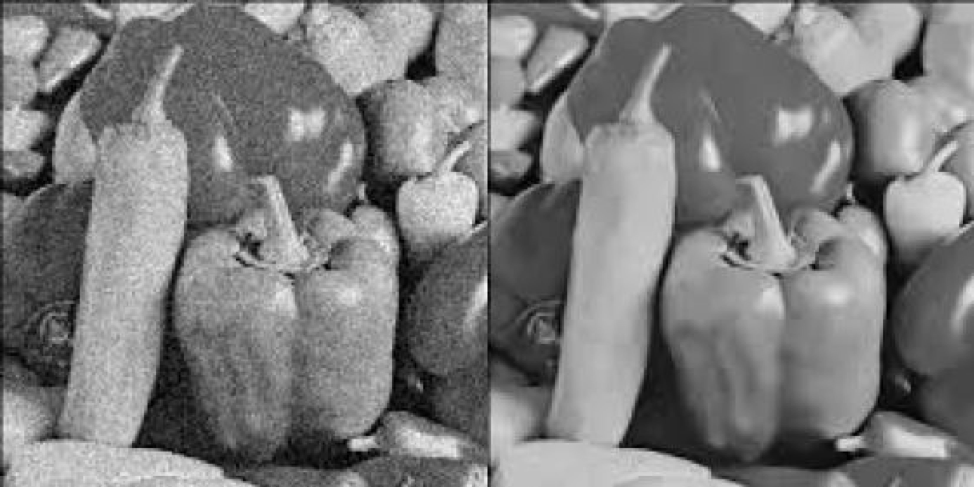

Deep Image Prior defies the idea that “deep learning only works in the context of massive datasets or models pretrained on such datasets”. This paper showed that some deep neural networks could be successfully trained on a single image without large datasets, the structure of the network itself could be preventing deep networks from overfitting.
Overview
“Deep Image Prior” a startling paper showing that the structure of the convolutional neural network (CNN) contains sufficient “knowledge” of natural images. It showed that some tasks – such as denoising and super-resolution – can actually be successfully conducted on a single image , without any additional training data.
This post is a digest of the paper, rather than a comprehensive summary.
From the “Deep Image Prior” Author
Brief Explanation of “How it Works?”
A prior is short for “prior distribution”, which is intuitively a distribution that represents our basic beliefs in the absence of information.
In the case of images, a prior distribution over images basically represents what we think ground truth images should look like. Consider the following two images:
 The left image is random noise and the right image is a cat.
The left image is random noise and the right image is a cat.
This may seem too obvious to mention, but from the perspective of a computer, both are just arrays of integers. The fact that we recognize one as a natural image and the other as noise indicates that humans have some implicit prior over what natural images should look like. Priors are used in generative models to ensure that we gain “natural” outputs. In the context of image generation, priors restrict the output image to resemble natural images instead of noise.
Regularizers can often be interpreted as incorporations of prior distributions. For instance, l2 regularization represents a belief that weights should be zero on average, and larger weights should be exponentially rarer compared to smaller weights. This is equivalent to putting a Gaussian prior over the weights. How are priors used in practice? Let’s take a practical example that is introduced in the paper: denoising an image. We will denote the noisy image as $x_0$ and the image we produce as $x$.
A noisy image (left) and its denoised, original version (right)
A straightforward approach to this problem would be to train a neural network that takes noisy images as input and outputs the denoised image. This is called a learning-based approach.
The problem with this is that, this approach requires massive amounts of noisy and Ground Truth image pairs. Suppose now that we do not want to use any additional data.
How do we perform denoising in this scenario?
One approach is to think of this problem as an optimization problem. We aim to create an image $x$ that is both close to the noisy image $x$ but is “noise-free”, “clear” and “natural”.
| We can measure the “closeness” of images with the l2 distance between the pixel values $ | x - x_0 | ^2$. |
Suppose for a moment that there was a function that could measure the “naturalness” or “clearness” of an image $naturalness(x)$. For the sake of aligning the notation with the original paper, we will use the term $R(x) = - naturalness(x)$ for the remainder of this post. $R(X)$ measures the “unnaturalness” or “unclearness” of an image. In this case, our optimization objective would be
| The left term $ | x – x_0 | ^2$ pulls the term towards the original image, making sure that the image does not deviate too far. The right term pulls $x$ in the direction of natural images, (hopefully) reducing the noise. |
The term $R(x)$ represents our prior over natural images and is, therefore, a “regularization term”. Without the regularization term $R(x)$, the optimizer will “overfit” on the noisy image – i.e. it will just return the noisy image. Therefore, how we define this prior/regularization term is crucial in obtaining high-quality results.
Unfortunately, we do not have an exact prior over natural images. Traditionally, we have used hand-crafted features to represent the prior, but these always involve some level of arbitrariness. The essence of this paper is that CNNs can be used as priors over images; in other words, CNNs in some way “know” what natural images should and should not look like. The remainder of this post will explain how the paper has verified this statement and its explanation behind it.
Randomly initialized convolutional neural networks (CNNs) that are used to generate images have an implicit “prior”: they resist generating noisy images and have a bias towards natural images. The idea of the paper is to get rid of the explicit regularization term and use a CNN “decoder-encoder” model to construct the output image $x$. Expressed as an equation, the optimization objective becomes
| $min | f_\theta (z) – x_0 | ^2$ |
where $\theta$ represents the parameters of the model and $z$ is a randomly initialized latent vector. Instead of directly optimizing $x$, we optimize $\theta$ using gradient descent. The surprising aspect of this paper is that we initialize $\theta$ randomly. Using this property, we can train CNNs to conduct denoising, super-resolution, and a host of other tasks on a single image. When we optimize using gradient descent, CNNs “resist” noisy (unnatural) images, and has a bias towards producing natural images. The following figure provides evidence to support this claim:

Application
1. Denoising and general reconstruction
Aside from simple additive noise, noise can come from all sorts of sources such as compression. The paper demonstrates the applicability of this method to a wide range of uses. Here is one example of successful denoising:

2. Super-resolution
The goal of super resolution is to take a low-resolution image and up sample it to create a high-resolution version. The following are some results from the paper:

3. Inpainting
Inpainting is a task where some of the pixels in an image are replaced with a blank mask, and the erased portion has to be reconstructed. In this case, the pixels corresponding to the blank mask are excluded from the loss function, meaning we need some prior to determine how the blank pixels will be filled in.

References
- https://dmitryulyanov.github.io/deep_image_prior
- https://en.wikipedia.org/wiki/Deep_Image_Prior
Read more @ Imaginea Labs Blog